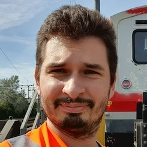
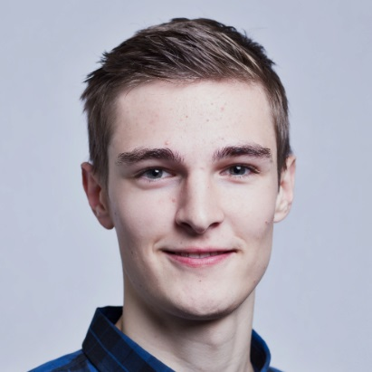
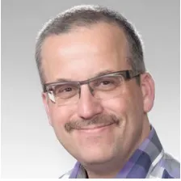
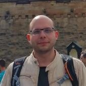

Organized by
Capella Days 2024 is organized by Obeo and Thales.
Capella Days regularly brings together the community of Capella and Arcadia:
Capella Days is your opportunity to learn from Capella ecosystem members! Benefit from the experience of industrial adopters who have sucessfully deployed an MBSE approach with Arcadia and Capella on their projects.
Capella Days 2024 is organized by Obeo and Thales.
Capella Days 2024 is sponsored by vibrant members of the Capella ecosystem:
You are a provider of services or products related to Capella?
Support the event and gain visibility from the Capella practitioners by sponsoring Capella Days.
We are interested in industrial feedbacks that show how Capella is concretely used in various sectors:
Important dates:
Three talks have been selected in advance:
At Digital Rail for Germany, a railway sector initiative, we work on digitalization and application of latest technologies to bring more capacity to the existing network, increase quality and punctuality. To manage the complexity of the challenge at hand we adopted a Model-Based Systems Engineering (MBSE) approach and created an own engineering environment around Capella.
We use Capella for both internal development projects and together with our partners within Europe Rail Joint Undertaking. Due to the complexity of our environment Capella alone was not enough so we developed an engineering environment around Capella and integrated it with the rest of our engineering toolchain. Most of the bespoke development we've done is public on GitHub.
However, scaling MBSE up across a large organization presents unique challenges. These include enabling collaboration on models across different organizations, making MBSE content accessible to non-MBSE stakeholders, and addressing the need for efficient training. Our presentation outlines our strategies to overcome these challenges:
This talk will provide valuable insights into how we address these challenges, ensuring that MBSE can be scaled effectively to support the digital transformation of Germany's railway system.
|  |
Viktor Kravchenko (DB InfraGo AG)Viktor Kravchenko is a Systems Engineering specialist with 15+ years of experience in aerospace and railway domains. In his current role at Digitale Shiene Deutshland he leads the Systems Engineering Toolchain team that takes care of the (MB)SE engineering environment and simplification of daily engineering work. |
|  |
Moritz Weber (DB InfraGo AG)Moritz Weber joined Digitale Schiene Deutschland in 2021 and leads development activities aimed at enhancing the Capella experience and improving collaboration through the Capella Collaboration Manager. His work involves overseeing the Capella environment across various servers, ensuring seamless integration in diverse setups. |
Julius Berges (DB InfraGo AG)Dr.-Ing. Julius Berges has been part of the Digital Rail for Germany initiative since 2024. As a member of the Systems Engineering Methods team, he specializes in advancing Model-based Systems Engineering (MBSE) methodologies to drive innovation and efficiency in rail systems. |
The European Organization for Nuclear Research (CERN) has operated high-energy accelerators for 70 years of research in fundamental physics. CERN’s scientific activities currently produce up to 640 tons of radioactive waste (RW) per year, which are generated by the interaction between high energy particles and equipment present inside the accelerator complex. CERN reuses activated material as far as possible, the rest that cannot be reused or recycled is eliminated in dedicated disposal facilities for radioactive waste of the two Host States, France and Switzerland.
The ARCADIA methodology and the Capella tool were used for the first time by the CERN Radiation Protection Group to conceive and specify an effective process for the elimination by melting of metallic radioactive waste. A project was launched accordingly in 2019, whose aim was to prove the feasibility of the new process, termed “MAST” (Melting of Activated STeel). As a result, a batch of 19 m3 of Low-Level/Intermediate-Level metallic radioactive waste was successfully selected, characterized and then melted at the end of 2022, resulting in 8.3 ingots (1.9 m3) and 0.15 m3 of slag that were successfully disposed of in June 2023.
This talk provides an overview of how the ARCADIA methodology guided in the development of a complex RW industrial process as MAST by means of graphical elements alone. The Capella software was instrumental, providing a rich set of diagrams that covered all the design needs; it generated automatically a textual specification of the process that was required by the auditing French Authorities but that was actually never used throughout the development, implementation, and audit: the diagrams conveyed all information needed and served as a clear basis for its understanding when discussing with the development and auditing teams. Differences in the educational backgrounds of technicians, engineers or physicists played little or no role at all.
Luca Bruno (CERN)Luca Bruno studied nuclear engineering at the University of Palermo (Italy). After graduating, he moved to Germany, to work for the nuclear fusion project ITER and then to Switzerland, where he is active in the field of particle accelerator engineering since 1998. He is currently project leader of the new radioactive waste treatment and interim storage center of CERN, the European organization for nuclear research. |
In this presentation we will explore the joint use of Model-Based System Engineering (Capella) and the use of Simulation (System Composer, Simulink) to perform architecture optimization and system analysis in the context of the project SBSP (Space-Based Solar Power, part of the ESA SOLARIS program).
Serena Brizio (Thales Alenia Space)Serena Brizio is an aerospace engineer specializing in MBSE, currently at Thales Alenia Space. With a Master's from Politecnico di Torino, she has led MBSE projects at Airbus since 2020, focusing on risk analysis, system architecture, and tool development, and she was also a MBSE teacher at INSA in Toulouse. Then she joined Thales with the role of Avionic System Engineer for the space exploration program. |
|
|  |
Stephan van Beek (MathWorks)Stephan van Beek brings over 15+ years of dedicated service at MathWorks, Eindhoven, where his role as a technical specialist has made him a key player in the Systems Engineering and Embedded Systems (FPGA, SoC) landscape. Stephan connects with customers across Europe and his ability to merge the principles of Model-Based Systems Engineering (MBSE) with Model-Based Design (MBD) have made him a go-to expert in his field. |
|  |
Marco Bimbi (MathWorks)Marco Bimbi is a technical specialist for Model Based Systems Engineering workflows for safety critical applications. Marco joined MathWorks in 2022. Before joining The MathWorks, he has worked for 10+ years in aerospace as well as rails industries such as Rolls-Royce and Deutsche Bahn focusing on Systems Engineering workflows for safety critical applications. |
Lorenzo Guarino (Thales Alenia Space)Lorenzo Guarino is an aerospace engineer specialized in the space field, currently employed at Thales Alenia Space. He earned his Master’s Degree through a collaboration between Politecnico di Torino and Thales Alenia Space, focusing on a dynamic application of Model-Based Systems Engineering (MBSE) for the ESA SOLARIS project. After his thesis, he joined Thales as a Mission Analysis and Operations engineer. |